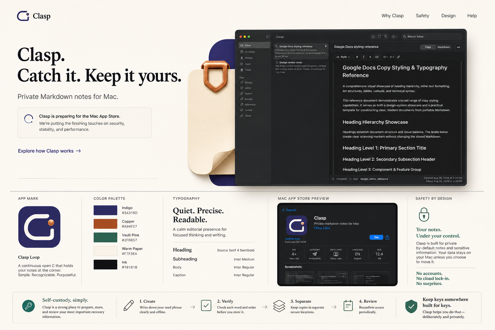
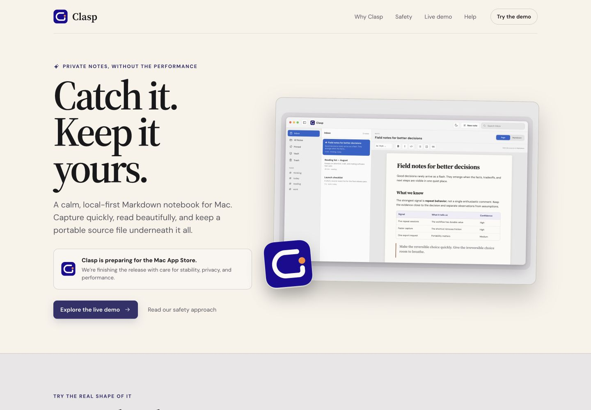

<!doctype html>
<html lang="en">
<meta charset="utf-8">
<title>Clasp design comparison</title>
<style>
  * { box-sizing: border-box; }
  body { margin: 0; padding: 24px; color: #f7f3ea; background: #17171d; font: 600 14px/1.4 -apple-system, sans-serif; }
  main { height: calc(100vh - 48px); display: grid; grid-template-columns: 1fr 1fr; gap: 20px; }
  figure { min-width: 0; margin: 0; display: grid; grid-template-rows: auto minmax(0, 1fr); gap: 10px; }
  figcaption { letter-spacing: .08em; text-transform: uppercase; }
  img { width: 100%; height: 100%; object-fit: contain; object-position: top; border: 1px solid rgba(247,243,234,.2); background: #f7f3ea; }
</style>
<main>
  <figure><figcaption>Selected source — Quiet Instrument</figcaption></figure>
  <figure><figcaption>Working implementation — desktop hero</figcaption></figure>
</main>
</html>
